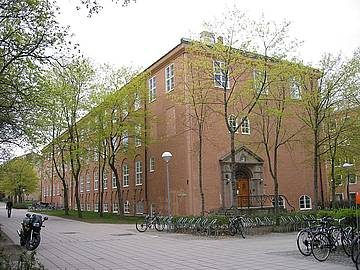

Gamle fysikk
Tegnet av Bredo Greve. Bygget ble tatt i bruk i 1924. I dag huser bygget blant annet studentekspedisjonen til IMEs fakultetadministrasjon.
Tegnet av Bredo Greve. Bygget ble tatt i bruk i 1924. I dag huser bygget blant annet studentekspedisjonen til IMEs fakultetadministrasjon.